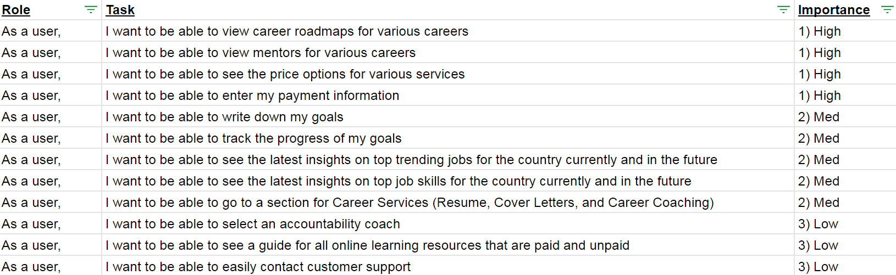
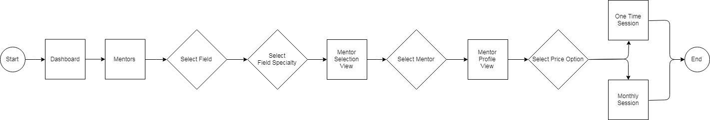

-
John
- Age: 19
- Occupation: Student
- Bio: John is a student at George Mason University and he is majoring in Accounting. He is a member of the basketball team and is very excited about his future.
- Motivation: John is a driven individual and wants the best career possible for his future. He was told Accounting has good job prospects right out of college and is a good degree to pursue.
- Goals: John wants to make sure Accounting is the best major for him and not waste time on a degree that will not make him happy in the future. His goals are to have a successful career in the future that will provide him a livable income. John always had a passion for technology bus is not sure if there is a future for him in the technology world.
- Frustrations: John is not sure if Accounting will be the most fulfilling career in the future and is only majoring in it because his father has a successful career as an Accountant and the job prospects are good. John wants to look at other options but does not know where to start or who to go to for advice.

-
Stacey
- Age: 26
- Occupation: Full-Stack Developer
- Bio: Stacey was a graduate of Harvard and majored in Computer Science. She currently works for a major government contracting firm as a Full-Stack Developer. She has always had a passion for technology.
- Motivation: Stacey always wanted to be a teacher, but she knew the pay was not the best. She has a passion to help younger students out with their career.
- Goals: Stacey wants to help mentor students for the future of the tech industry and if she can make some extra money that would be a bonus. Her goals are to help students figure out their talents early on and save time on finding their true passions in life so that they can have a satisfying career.
- Frustrations: Stacey has no idea where to start in her search for a platform to help students. She also does not have time to find students to mentor. If only there was a platform that could allow her to coach mentor students for the future of tech.
User Stories

User Flows
